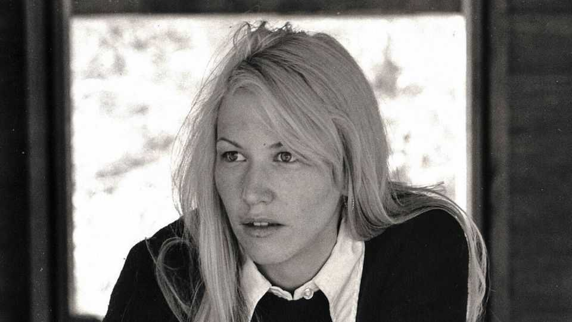

Annie Dillard wanted to know the mind of God
The nature writer and “theologian” died on September 15th, aged 81

Oct 15th 2026
She could never forget the moth. It hatched from a cocoon kept by her teacher in a Mason jar, a huge Polyphemus silk moth with, potentially, velvety brown wings bearing a bright blue eyespot. At the moment of hatching, its wings produced a hardening varnish that would enable them to spread. Then it could fly. But the jar was too small, and the varnish worked too fast. The moth, when released on the street, could only walk. But it struggled gamely on with its useless lumps of wings, heading somewhere. In Annie Dillard’s mind, it was still going.
She was the only one to see it as it went. She was often a sole observer, quietly noting. A goldfinch shaking a seeding thistle until the down floated, “blind and sweet”, all over the landscape. A mosquito biting a poisonous copperhead. A leaf still curled like a thin, pale flame in its bud on a tulip tree. Frogs leaping like flares through a mesh of blue-green algae, “surfacing to awareness”. Another frog on the bank of Tinker Creek, stock still, as a giant water bug slowly liquidised its insides and sipped its life away.
It was Tinker Creek that made her famous. The book she wrote about her thoughts and sightings there, “Pilgrim at Tinker Creek”, won her a Pulitzer in 1975, when she was only 28. She was the youngest woman to win one, and the first in the man’s world of nature-writing. But fame was the last thing she wanted. All she had needed for years was that damp, broken ground near Roanoke, Virginia, the sycamore log on which she sat, the noisy creek with its silvery shiners swarming in the shallows, and the Osage orange tree from which rose, once, a hundred red-winged blackbirds. When the Pulitzer news came, she was washing spinach. She wouldn’t have to do that any more, the pressman said. But she would, and did.
Before too long she fled from the unbearable fussing, decamping with her writer husband to Washington state and the islands off the coast. From her various exile places she produced essays, poetry, philosophy, journalism, two novels and an autobiography. For preference she wrote in very small spaces, usually log cabins, facing away from the view. Inevitably people compared her to Henry David Thoreau, the 19th-century naturalist who had been the subject of her master’s thesis, but she didn’t agree. Unlike him, she didn’t live in most of her cabins; half of “Tinker Creek” had been written, after hours, in a public library. Her favourite writer was not him, but Primo Levi, because he wrote the truth.
Nor did she think of herself as a nature writer. All she saw and noted was part of an overwhelming question: why, among the prodigal beauties and intricacies of the world, was there so much destruction? Why were there thousands of barbules on the wing of a wild goose that any predator might devour? What was the creator—if there was a creator—thinking? Why was there so much care, then none? She loved to watch hatchings and unfoldings. But the hatchlings were immediate food for something else, and each leaf shrivelled in two seasons. This couldn’t all be some cynical show, though she sometimes called it that. Perhaps it was more a case that God could do anything, so he did. Wildly, freely.
And what was she, amid all this? Nothing important. She was not needed in creation. Her life seemed no more than the tunnels made by miner larvae on a leaf, “a faint tracery on the surface of mystery”. Yet she contained multitudes. She could see, with her naked eye, through two million light years as far as the Andromeda galaxy. She could explore endlessly, as she did, and reflect on her explorations. Those were not, in the end, about understanding nature. She was more of a theologian.
Religion didn’t feature much at all as she was growing up, tomboyish and comfortably middle-class, in Pittsburgh. Books did. They swept her away. From the age of five, she reckoned she read 100 books a year. She wanted to know and remember everything: history, geography, geology, minerology, criminology, the names of trees and the names of birds. She read and re-read “The Field Book of Ponds and Streams”. As with her sightings in nature, so with the written word. Someone had to read these books.
On the writing of books, though, she had strong opinions, laid out in 1989 in “The Writing Life”. That life was far from a state of sedentary inspiration. It was arduous, tough and necessarily cruel. The writer’s first line of words was a probe into the unknown, digging a path; once she had arrived in a new, promising place, the path had to be erased. Cut the umbilical cord. Everything written up til then probably had to go, even the favourite passages and the load-bearing walls; even, sometimes, the whole original point of the thing. Ruthlessness was essential; no excess. If a book got stuck, or out of control, it must be visited every day, as if the writer were a lion-tamer with a chair shouting “Simba!” Mastery had to be reasserted, and not just—as she asserted hers—with near-continuous coffee and Vantage cigarettes.
In the middle of “The Writing Life” she recorded a peculiar event: the apparently spontaneous combustion of a typewriter. It was a portable Smith-Corona, so not attached to power. The explosion shook the house, and she raced upstairs to find the device erupting with fire and ash. As she tried to douse the flames, sparks burned holes in her shirt. It might have been a careless cigarette, but she did not say so. In her telling there was just, suddenly, fire.
It was often around. As a child, she wanted to run so fast that she would throw out sparks. At Tinker Creek she saw, at sunset, some divine power “rolling along the mountain ridges like a fireball”. At moments of “seeing truly” the grass was wholly fire, and the backyard cedar became a tree of lights. She felt lifted then, resounding “like a beaten bell”. Yet only she had noticed those things, as only she had seen the death of the Tinker Creek frog, or the crippled moth staggering on. Only she was meant not to miss that horror and that beauty. That was what she was for. ■